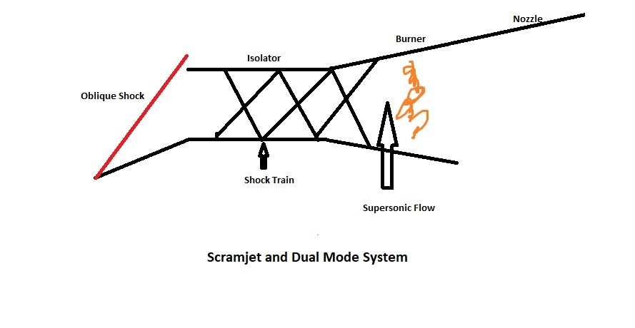

Ramjets and Scramjets are two types of air-breathing jet engines designed for high-speed flight. While they share some similarities, they operate under different conditions and have distinct characteristics. This article explores the differences between Ramjets and Scramjets, their operational ranges, and the concept of dual-mode systems.
There is a small overlap in their operational ranges, but each engine type is optimized for its specific speed regime.
Both Ramjets and Scramjets lack turbomachinery or rotating parts, relying instead on their geometry and the high-speed airflow for compression. The key difference lies in how they handle airflow before combustion.
Challenges of Scramjets:
At Mach 5 and above, the efficiency of Ramjets drops dramatically. The total pressure loss across a normal shock wave at these speeds exceeds 90%, severely reducing engine performance. Scramjets avoid this issue by maintaining supersonic flow throughout the engine.
To bridge the gap between Ramjets and Scramjets, engineers have developed dual-mode systems. These engines can operate as a Ramjet at lower speeds (up to Mach 4-5) and transition to Scramjet mode at higher speeds.
As the vehicle accelerates beyond Mach 5, the engine naturally transitions to Scramjet mode. The shock train in the isolator changes from normal shocks to oblique shocks, and the flow remains supersonic throughout the engine.
The choice between Ramjet and Scramjet engines depends on the intended flight regime. Ramjets excel in the high supersonic range, while Scramjets are necessary for hypersonic flight. Dual-mode systems offer a promising solution for vehicles that need to operate across a wide range of speeds, from high supersonic to hypersonic regimes.